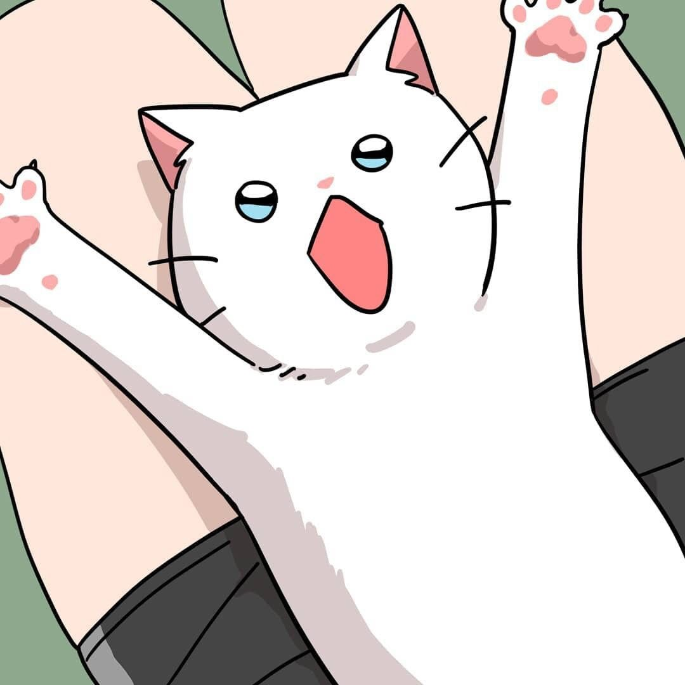

Chunbae is the main character of a webtoon Meow Man. Chunbae is a white cat. Chun-bae is a man. And he is very cute. He looks handsome when he turns into a man. Chun-bae is the prince of Nyangguk, but he is now out. The heroine of the webtoon, Bomi, picked him up and lived in the same house with Chunbae. Chun-bae likes Bo-mi. 
Thanks to Chun-bae, cafes have become popular. Chunbae's fan club is called Chunbaeya.